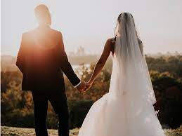
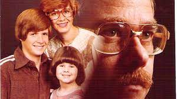

What We Have Done
Becuse of our popularity across southwest Missouri, we get hundreds of clients every year. From families wanting to capture lifelong memories to graduating seniors trying to encapsulate 12 years all into one image, we have done shoots of all kinds. Our clients have come back generation after generation to get their pictures taken, which causes us to have a diverse portfolio of previous shoots. We hope to see you in an upcoming shoot! Some of our most popular shoots are:
Senior Photos
After 12 long and struggle filled years it can be hard to think that your whole high-school career is over. Some may have very memorable times, others no so much. Yet there's an ongoing problem of not taking enough pictures while in school. That's where we come in! We try to work with your preferences and needs to wrap all 12 years of memories into a few hundred images. You get to pick the location and the time, and we will do all the other organizing. All we want is to have this one moment captured, and that's what we are going to do for you.
Weddings
Finally, after all this time they have finally proposed! You now get to have your special day that you always dreamed of, complete with food, family, and lots of fun. Wouldn't you like to make sure that you remember this day for the rest of your life? Well you're in luck, because so do we! We want to make sure that your special day is fit for the queen or king that you are, complete with the paparatzi treatmet that you deserve. Whether you want to elope and have a hush hush weding shoot or you want to have an extravagent castle shoot, we will make sure to make it happen. Our photographers will work tirelessly through day and night to make sure that you have everything that you dream of. From scheduling, to reserving the veue, to even calling your estranged relatives so that they will be in the photos too, we will make it happen!
Family Photos
Good job you! You finally found a day when everyone wasn't busy at school or at work for some quality family time. But now what do you do? This is a once in a lifetime opportunity where you have everyone together at one time. You could maybe soend loads of money on some activity that will ultimately last only a half hour, or you could get a family photo that will last for years to come! And thats where we come in. We will personally make sure that all the love that your family has is encapsulated into this one image. That's gaurenteed! And if you end up not liking your pictures, come in again and for a small fee we tcan retake them. Wouldn't you want that perfect picture to hang over the fireplace? Of course you do! So come down and see us us that we can give you the top of the line quality for the bottom of the line price.